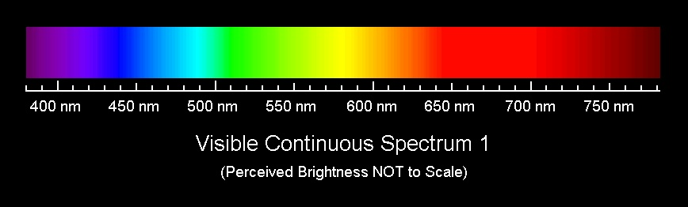

-Le rouge est un champ chromatique regroupant les couleurs vives situées sur le cercle chromatique entre l'orange et les pourpres. Lavé de blanc, le rouge devient rose, sombre, il s'appelle brun. Opposé au vert, il forme un des contrastes qui, avec celui entre le bleu et le jaune et celui entre le noir et le blanc, orientent la perception visuelle. Un rouge, un vert et un bleu suffisent pour la synthèse additive des couleurs ; différentes nuances de rouge peuvent servir de couleur primaire. Pour la théorie ondulatoire de la lumière, la bande rouge est à l'extrémité de moins d'énergie du spectre visible, à la limite de l'infrarouge.
Certaines cultures classent les sensations visuelles entre le sombre, dont le maximum est le noir, le clair, dont le maximum est le blanc, et le coloré, correspondant aux couleurs vives, dont le maximum est le rouge. Toutes les autres couleurs se placent dans ces catégories fondamentales. Même dans la culture occidentale, où la classification des couleurs par celles de l'arc-en-ciel domine, le rouge vif a un statut particulier, dans la signalisation et dans la symbolique.
-Le bleu est un champ chromatique, regroupant les teintes rappelant celles du ciel ou de la mer par temps claira.
On rencontre des pierres, des oiseaux, des fleurs et des papillons bleus, mais les matières bleues sont moins fréquentes dans la nature que les vertes, les rouges et les jaunes
Le champ chromatique « bleu » comprend de nombreuses nuances soit saturées, comme le bleu outremer, soit désaturées, comme le bleu ciel, soit claires, soit foncées comme le bleu nuit. Il s'étend des bleu-verts ou turquoise aux bleus outremer et bleus violacés.
Les longueurs d'onde des lumières bleues s'étendent de 450 à 500 nanomètres environ1 ; la norme AFNOR X08-010 « Classification méthodique générale des couleurs » fixe ces limites de 476 à 483 nm, et de 466 à 490 nm en incluant les bleu-violet et les bleu-vert. Au contraire des rouges qui deviennent roses, les couleurs les plus lavées de blanc s'appellent toujours bleu, jusqu'à la limite avec les gris2.
-Le vert est un champ chromatique regroupant les couleurs situées sur le cercle chromatique entre le jaune et le bleu. Contrairement à d'autres couleurs, qui changent de nom quand elles sont lavées de blanc ou rabattues avec du noir, comme le rouge qui devient rose ou brun, le vert conserve son nom, vert pâle ou vert foncé, vert vif ou vert grisâtre.
Le vert dû à la chlorophylle est la couleur de la plupart des feuillages de la végétation.
Selon la norme AFNOR X08-010 « Classification méthodique générale des couleurs », les verts sont des couleurs dont la longueur d'onde dominante est comprise entre 490 et 573 nm. Les longueurs d'onde les plus courtes correspondent à des verts tirant vers le bleu, comme le vert turquoise ; les plus longues correspondent à des verts tirant vers le jaune1.

Abdellah Wahbi